Does radiation move the same chemistry a magnetic field does?
Multi-omics profiling reveals ethylene signalling as a key pathway underlying both genetic and epigenetic responses to low-dose ionizing radiation in Arabidopsis — NASA OSDR OSD-782 / GLDS-679. Two doses, four timepoints, Arabidopsis, GeneLab-processed differential expression.
Ionising radiation is not a magnetic-field regime and this page does not treat it as one. It is here because radiolysis makes radicals and ROS directly, and the magnetic-field literature converges on the same redox machinery. So the question is overlap: which nodes does radiation move, and are they the ones a magnetic field moves? A shared locus is a lead, not a mechanism.
- 123/125atlas loci measured
- 2×4doses × timepoints
- 4/11loci respond to both
- 2agree in direction
Two loci respond to both ionising radiation and a near-null magnetic field,
in the same direction:
AT1G20630 (CAT1) and AT1G32350 (AOX1D). Of
11 atlas loci measured in both experiments,
4 respond to both and
2 agree in sign; the other
2 move in opposite directions.
This is a lead, not a result. Eleven loci is far too few to test —
compare.overlap_exceeds_chance refuses rather than returning a p-value that
would look like evidence. Catalase in particular responds to almost every stress, so
finding it in two lists means little on its own.
Why this page works at locus level, not node level
The obvious way to ask the question is per node: does the AOX node respond to both? Done that way the answer looked clean — three of six shared nodes, two agreeing in direction. It does not survive looking at the underlying genes.
At node level AOX appears to respond to both radiation and near-null field in the same direction, which reads as one clean shared response. At locus level it is two stories. AOX1D (AT1G32350) rises under both and genuinely agrees. AOX2 (AT5G64210) also responds to both, but FALLS under radiation while rising under near-null field. The two family members move in opposite directions under radiation, so the node's single trace is the aggregator choosing a different gene at each timepoint - it swung from -2.43 at 24 h to +3.96 at 72 h for that reason, not because anything reversed. A gene family is not a unit of response, and the node-level agreement here is partly real (AOX1D) and partly an artefact (AOX2 cancelling into it).
| Locus | Radiation | Near-null field |
|---|---|---|
AT3G22370 (AOX1A) | +0.70 | +0.34 |
AT3G27620 (AOX1C) | +0.98 | not in that table |
AT1G32350 (AOX1D) | +3.96 | +0.73 |
AT5G64210 (AOX2) | -2.43 | +1.41 |
So the maps below draw multi-locus nodes as a per-locus
heatmap rather than a single trace. One row per locus, one column per
timepoint, same diverging colour scale as everything else — a family that splits shows
as a warm row above a cool one. On these maps
17 node(s) are drawn that way:
ACONITASE, ALT_NADH_DH, AOX, ASCORBATE_PEROXIDASE, ASC_GSH_CYCLE, CATALASE, CIA_SYSTEM, COMPLEX_I, COMPLEX_II, CYTOCHROME_C, FES_CLIENTS, HSCB_GRXS15, NFU_CARRIERS, PLASTID_ROS, RIESKE_FES, SUF_SYSTEM, SUPEROXIDE_DISMUTASES. A node standing for a single
locus keeps its sparkline, which reads better when there genuinely is one trace.
The AOX heatmap is the case above made visual: the 1g32350 row is warm
across all four timepoints while 5g64210 turns blue at 24 and 72 hours. No
aggregate could have shown that, and it took a separate investigation to find before the
heatmap existed.
So the atlas gained a check it did not have:
qbio.project.project_series now records, per timepoint, whether a node's
loci disagreed in sign, and the caption says so. Under radiation
almost every multi-locus node diverges — a strong perturbation splits
gene families, and a node aggregating them is summarising genes doing different things.
That qualifies every multi-locus value on every page in this atlas, not just this
one.
Radiation against near-null field, locus by locus
The near-null comparison is Parmagnani 2022, the only near-null time course in Arabidopsis available. It reaches 11 of the atlas's loci, because its supplementary table was filtered by its authors to oxidative-reaction enzymes. A locus counts as responding at |log2FC| ≥ 0.5, applied identically to both sides — the point of a fixed threshold is that it cannot be tuned to make the overlap more interesting.
| Locus | Radiation | at | Near-null | at | Responds to | Same direction? |
|---|---|---|---|---|---|---|
AT1G07890 (APX1) | -0.27 | 0.1 Gy, 24 hour | +0.28 | shoots, 24 h | neither | — |
AT1G08830 (CSD1) | -0.44 | 0.1 Gy, 1 hour | +0.30 | shoots, 24 h | neither | — |
AT1G15550 (GA3OX1) | +1.51 | 0.1 Gy, 1 hour | +0.42 | shoots, 10 min | radiation | — |
AT1G20630 (CAT1) | +0.91 | 1 Gy, 72 hour | +0.94 | shoots, 4 h | NNMF, radiation | yes |
AT1G32350 (AOX1D) | +3.96 | 1 Gy, 72 hour | +0.73 | shoots, 48 h | NNMF, radiation | yes |
AT2G28190 (CSD2) | -0.59 | 0.1 Gy, 1 hour | +0.50 | shoots, 24 h | radiation | — |
AT3G09640 (APX2) | +1.90 | 1 Gy, 72 hour | -1.09 | roots, 24 h | NNMF, radiation | no |
AT3G22370 (AOX1A) | +0.70 | 1 Gy, 72 hour | +0.34 | shoots, 24 h | radiation | — |
AT4G25100 (FSD1) | +0.43 | 0.1 Gy, 1 hour | -0.43 | shoots, 24 h | neither | — |
AT4G28220 | -0.27 | 0.1 Gy, 24 hour | -0.29 | roots, 4 h | neither | — |
AT5G64210 (AOX2) | -2.43 | 1 Gy, 24 hour | +1.41 | shoots, 48 h | NNMF, radiation | no |
Scroll sideways for every column. Values are the most extreme timepoint in each experiment.
And against a strong field, where a test is possible
The OSD-8 16.5 T contrast shares 123 loci with this study — enough to test. 3 respond to both, against 2.112 expected by chance (p = 0.352, 10,000 permutations), and 0 agree in direction.
That is no overlap at all, and it is consistent with the strong-field study itself: 16.5 T moved none of the six shared nodes past threshold. The near-null regime — the one the review is actually about — is where the leads are.
Are the atlas's loci especially radiation-responsive? No.
The same permutation test the OSD-8 page runs, from the same function in
qbio.compare with the same seed and permutation count — otherwise the two
numbers could not be placed beside each other. At every dose and timepoint the atlas's
loci move less than the background, p between
0.87 and
1.00.
But they are not inert, and that matters. They move up to 0.299 mean |log2FC| under radiation against 0.166 under the 16.5 T field — roughly 1.8× more. The background moves more still (0.423), which is why they stay under-represented. So the magnetic null on the OSD-8 page cannot be explained by these genes being unable to move. They move perfectly well when something perturbs them; they simply are not preferentially field-responsive.
| Dose | Time | Atlas loci | Random background | p |
|---|---|---|---|---|
| 0.1 Gy | 1 hour | 0.2896 | 0.4226 ± 0.0566 | 0.9971 |
| 0.1 Gy | 3 hour | 0.2409 | 0.3485 ± 0.0575 | 0.9888 |
| 0.1 Gy | 24 hour | 0.2042 | 0.3251 ± 0.0565 | 0.9984 |
| 0.1 Gy | 72 hour | 0.1815 | 0.3346 ± 0.0508 | 1.0000 |
| 1 Gy | 1 hour | 0.1936 | 0.3789 ± 0.0564 | 1.0000 |
| 1 Gy | 3 hour | 0.2987 | 0.3567 ± 0.0555 | 0.8652 |
| 1 Gy | 24 hour | 0.2092 | 0.2970 ± 0.0491 | 0.9806 |
| 1 Gy | 72 hour | 0.2927 | 0.3786 ± 0.0644 | 0.9247 |
The study, and the contrast that needed its own rule
Three declared factors: Ionizing Radiation, Absorbed Radiation Dose, Time of Sample Collection After Treatment.
cesium-137 gamma radiation at 0.1 Gy and 1 Gy against
non-irradiated controls, sampled at 1 hour, 3 hour, 24 hour, 72 hour.
The dose comparisons differ in two declared factors, not one.
Radiation source and dose are coupled by construction — there is no such thing as
cesium-137 at zero dose — so the single-factor rule the
OSD-27 page uses to isolate a magnetic field rejects every one
of them. qbio.osd782.isolates_dose treats source and dose as one coupled
axis and requires time to match. 8 contrasts qualify, and the build
asserts that none of them is single-factor, so the reason the rule exists stays
encoded.
Contrasts are kept irradiated-first, so a positive log2 fold change means "higher after irradiation".
The maps
Each node is tinted by its most extreme timepoint and carries its trajectory. Read them with the divergence warning above in mind: where a node's loci disagree in sign, its trace is the aggregator choosing between them, and the caption says which nodes those are.
{kind=link}

NASA OSDR OSD-782 / GLDS-679, GeneLab-processed differential expression. cesium-137 gamma radiation at 0.1 Gy against non-irradiated controls at matched time. 0.1 gy, 4 timepoints (1 hour, 3 hour, 24 hour, 72 hour). 8 of 8 identifier-bearing nodes received a series (100%); 4 nodes carry no gene identifier and cannot. multi-locus nodes aggregated by extreme at each timepoint. GeneLab reports log2 fold change directly; no conversion applied. 6 node(s) have loci that disagree in direction at the same timepoint (COMPLEX_I, PLASTID_ROS, SUPEROXIDE_DISMUTASES, ASCORBATE_PEROXIDASE…), so their single trace is the aggregator choosing between genes that are doing different things — read those per locus, not as a node. 5 node(s) reverse direction during the course (COMPLEX_I, MITO_SUPEROXIDE, CATALASE, PEROXIREDOXIN_TRX…), which no single-contrast overlay can show.
{kind=link}
{kind=link}

NASA OSDR OSD-782 / GLDS-679, GeneLab-processed differential expression. cesium-137 gamma radiation at 0.1 Gy against non-irradiated controls at matched time. 0.1 gy, 4 timepoints (1 hour, 3 hour, 24 hour, 72 hour). 10 of 10 identifier-bearing nodes received a series (100%); 7 nodes carry no gene identifier and cannot. multi-locus nodes aggregated by extreme at each timepoint. GeneLab reports log2 fold change directly; no conversion applied. 6 node(s) have loci that disagree in direction at the same timepoint (COMPLEX_I, COMPLEX_II, ALT_NADH_DH, AOX…), so their single trace is the aggregator choosing between genes that are doing different things — read those per locus, not as a node. 8 node(s) reverse direction during the course (COMPLEX_I, COMPLEX_I_FMN, COMPLEX_II, ALT_NADH_DH…), which no single-contrast overlay can show.
{kind=link}
{kind=link}

NASA OSDR OSD-782 / GLDS-679, GeneLab-processed differential expression. cesium-137 gamma radiation at 0.1 Gy against non-irradiated controls at matched time. 0.1 gy, 4 timepoints (1 hour, 3 hour, 24 hour, 72 hour). 10 of 10 identifier-bearing nodes received a series (100%); 1 nodes carry no gene identifier and cannot. multi-locus nodes aggregated by extreme at each timepoint. GeneLab reports log2 fold change directly; no conversion applied. 5 node(s) have loci that disagree in direction at the same timepoint (HSCB_GRXS15, NFU_CARRIERS, SUF_SYSTEM, CIA_SYSTEM…), so their single trace is the aggregator choosing between genes that are doing different things — read those per locus, not as a node. 9 node(s) reverse direction during the course (NFS1, ISU1, FRATAXIN, HSCB_GRXS15…), which no single-contrast overlay can show.
{kind=link}
{kind=link}

NASA OSDR OSD-782 / GLDS-679, GeneLab-processed differential expression. cesium-137 gamma radiation at 1 Gy against non-irradiated controls at matched time. 1 gy, 4 timepoints (1 hour, 3 hour, 24 hour, 72 hour). 8 of 8 identifier-bearing nodes received a series (100%); 4 nodes carry no gene identifier and cannot. multi-locus nodes aggregated by extreme at each timepoint. GeneLab reports log2 fold change directly; no conversion applied. 5 node(s) have loci that disagree in direction at the same timepoint (COMPLEX_I, PLASTID_ROS, SUPEROXIDE_DISMUTASES, CATALASE…), so their single trace is the aggregator choosing between genes that are doing different things — read those per locus, not as a node. 7 node(s) reverse direction during the course (PLASTID_ROS, MITO_SUPEROXIDE, SUPEROXIDE_DISMUTASES, ASCORBATE_PEROXIDASE…), which no single-contrast overlay can show.
{kind=link}
{kind=link}

NASA OSDR OSD-782 / GLDS-679, GeneLab-processed differential expression. cesium-137 gamma radiation at 1 Gy against non-irradiated controls at matched time. 1 gy, 4 timepoints (1 hour, 3 hour, 24 hour, 72 hour). 10 of 10 identifier-bearing nodes received a series (100%); 7 nodes carry no gene identifier and cannot. multi-locus nodes aggregated by extreme at each timepoint. GeneLab reports log2 fold change directly; no conversion applied. 7 node(s) have loci that disagree in direction at the same timepoint (COMPLEX_I, COMPLEX_II, ALT_NADH_DH, AOX…), so their single trace is the aggregator choosing between genes that are doing different things — read those per locus, not as a node. 6 node(s) reverse direction during the course (COMPLEX_I_FMN, ALT_NADH_DH, AOX, RIESKE_FES…), which no single-contrast overlay can show.
{kind=link}
{kind=link}

NASA OSDR OSD-782 / GLDS-679, GeneLab-processed differential expression. cesium-137 gamma radiation at 1 Gy against non-irradiated controls at matched time. 1 gy, 4 timepoints (1 hour, 3 hour, 24 hour, 72 hour). 10 of 10 identifier-bearing nodes received a series (100%); 1 nodes carry no gene identifier and cannot. multi-locus nodes aggregated by extreme at each timepoint. GeneLab reports log2 fold change directly; no conversion applied. 5 node(s) have loci that disagree in direction at the same timepoint (HSCB_GRXS15, NFU_CARRIERS, SUF_SYSTEM, CIA_SYSTEM…), so their single trace is the aggregator choosing between genes that are doing different things — read those per locus, not as a node. 6 node(s) reverse direction during the course (NFS1, ISU1, FRATAXIN, HSCB_GRXS15…), which no single-contrast overlay can show.
{kind=link}
What this does not show
- Not evidence about magnetic fields. Radiation is a different
perturbation axis. QBO's
field_regimesvocabulary is not used for it and was not extended; the record carries its ownperturbationblock. - Overlap is not shared mechanism. Two perturbations converging on one locus says they converge, not why.
- Different labs, tissues and platforms. Callus versus seedling, microarray ratio versus RNA-seq differential expression. Direction is the robust comparison; magnitude is not, and no magnitude comparison is made across experiments.
- Eleven loci is not a test. The near-null arm is reported as a table and explicitly not tested.
Reproducing it
PYTHONPATH=src python3 scripts/build_osd782_showcase.py
PYTHONPATH=src python3 scripts/build_overlap.py
PYTHONPATH=src python3 scripts/build_osd782_page.pyThe differential-expression table is ~255 MB across 132
contrasts; qbio.osd27.slice_contrasts streams it to a few hundred KB.
Every number here is written to
results/osd782/record.json and
results/overlap/record.json, and
this page is generated from them.